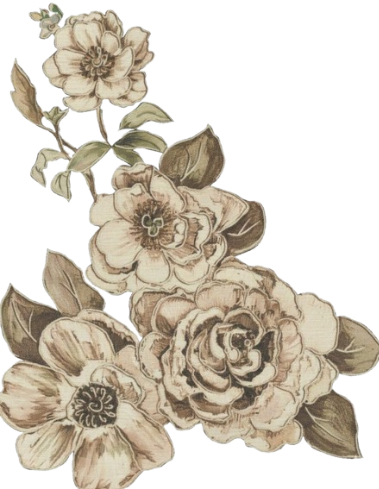
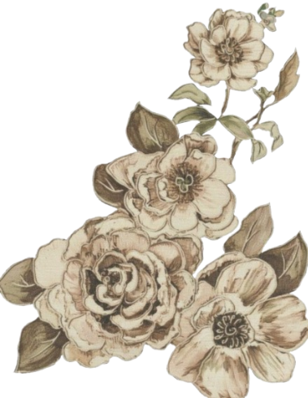
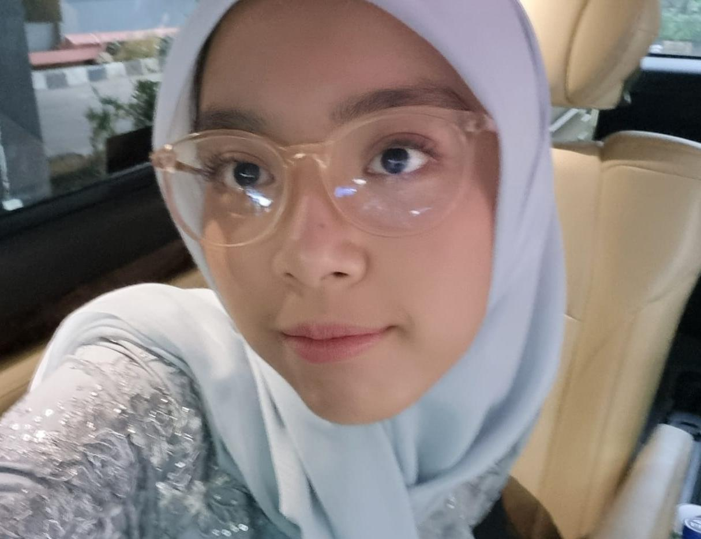

Student Portofolio Website
⋆⁺₊⋆ ━━━━⊱❀ • ❀⊰━━━━ ⋆⁺₊⋆

Achieved second place in regional Jabodetabek Japanese language competition representing SMP Labschool Jakarta.
Chosen as part of the school's representative team for the upcoming Biology OSK competition.
Participating in GMMUN at Mercure Ancol as the delegate of Italy in the FAO council.
Assisted laboratory staff with equipment preparation, laboratory organization, and learned basic medical laboratory procedures in a professional environment.
Operated a small custom crochet commission business, creating handmade products and handling customer requests and sales independently.
I enjoy creating handmade crochet items and exploring new patterns and designs during my free time.
I fill my free time with reading novels and journals regarding genres and topics that interest me.
I enjoy singing and listening to music as a form of relaxation and creative expression during my free. My favorite genres are rock, indie pop, alt pop, and kpop.
Particularly interested in pediatric medicine, laboratory research, and healthcare sciencesrelated to child development and patient care
Interested in marine ecosystems, reptiles, amphibian and animal biology, especially biodiversity and unique animal adaptations.
I believe that continuous learning and creativity are important skills for students because they help people adapt, communicate, and grow in different environments.